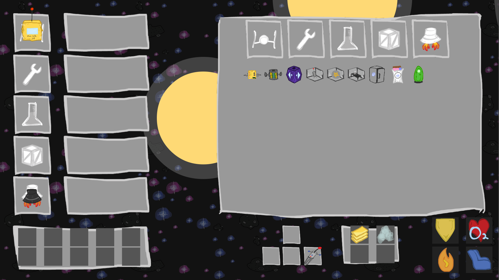
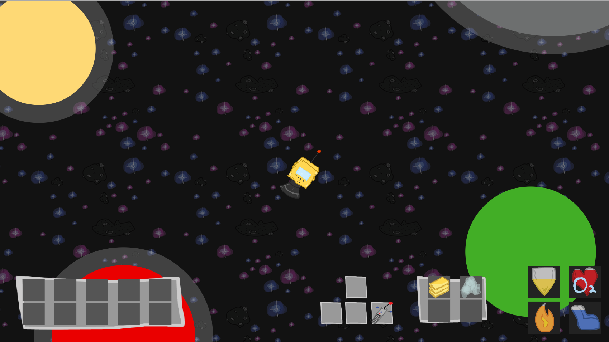
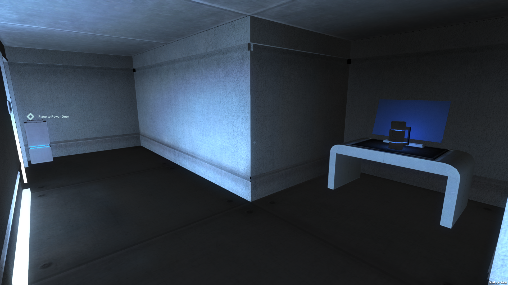
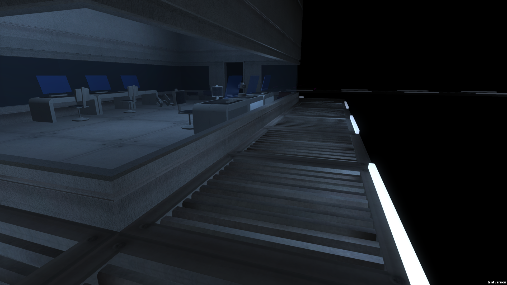
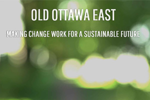

Andrew Brough

With chops in both development and design, I understand both sides of digital product production. I can code with C#, C++, Java, JavaScript and am always learning new languages and strategies. I also design my own assets with Photoshop and Illustrator.
Apples to Apples

Apples to Apples is a freemium game for iOS licensed by Mattel and Developed by Magmic inc. which features live online play with Facebook friends, ranking, progression and achievements. I worked as a gameplay/feature developer until the launch of the project in May 2015.
App StorePhase 10 Facebook


A card game licensed by Mattel developed in Flash with ActionScript, you play rounds of trying to complete different card “phases” like runs and sets. I worked on feature development, UI implementation, optimization and bug fixing with 2 other developers at Magmic inc.
Play it herePhase 10 Facebook's website
OttawaJS Presentation
I prepared a talk with Bethany Dunfield on how to build a game engine for HTML5 which we presented at the August OttawaJS meetup in 2014. We created our own engine and prepared demos of 5 steps of the process which we explained and demoed live. The engine covers basic a basic game engine including rendering, updating and player, enemy and world creation. It was very well received and we were even invited to present at future OttawaJS meetups!
Github RepositoryLiftoff
 A 2D exploration and gathering game for the desktop browser made for HTML5 that was made for the Global Game Jam 2015 in January. It was coded entirely with JavaScript using a custom engine built during the jam.
Play it hereGithub Repository
Hyperion
 

A Unity3D horror puzzle game made by myself and 4 teammates, you explore an abandoned space cruise liner and discover it’s secrets. Coded with C# from the ground up, we worked tightly for close to a year on our senior project for Interactive Multimedia and Design at Carleton University.
GithubYoutube Trailer
This Game Needs a Name


A 100% procedural game that uses the name you enter for the game and your character to generate the world and players. Made for the browser with JavaScript, we designed a side scrolling endless runner game where you control the constantly changing environment by using different powers. You can jump, shoot and use a shield, each which consume a power which is associated with a colour. When you consume a colour, the colour is drained from the background, when you save energy, colour is added to the background. The terrain, characters and textures are all generated algorithmically and do not use any image assets, making the game extremely fast to load (125 KB). Made with a team of 3 including myself during the 2014 Global Game Jam in January.
Play it hereGithub Repository
GGJ2014 This Game Needs a Name website
Sustainable Living Ottawa East Infographic Website
An infographic site which presents a high level introduction to the Sustainable Living Ottawa East organization including their goals and projects. It was created as a project for my communications class during my time at Carleton University, where we met with the client a handful of times to discuss their desires and goals for the site. The result was a high fidelity, modern site with large images and animations. We created the site using JavaScript and Ruby.
Infographic WebsiteSustainable Living Ottawa East Website